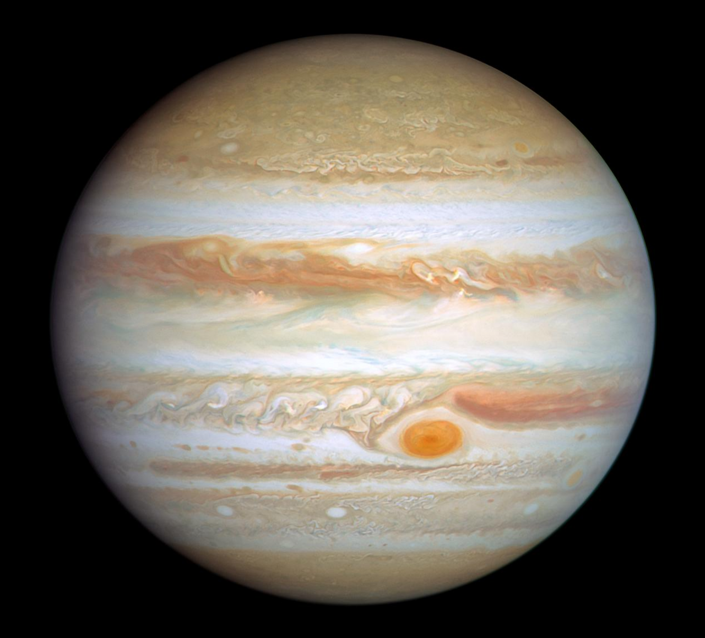
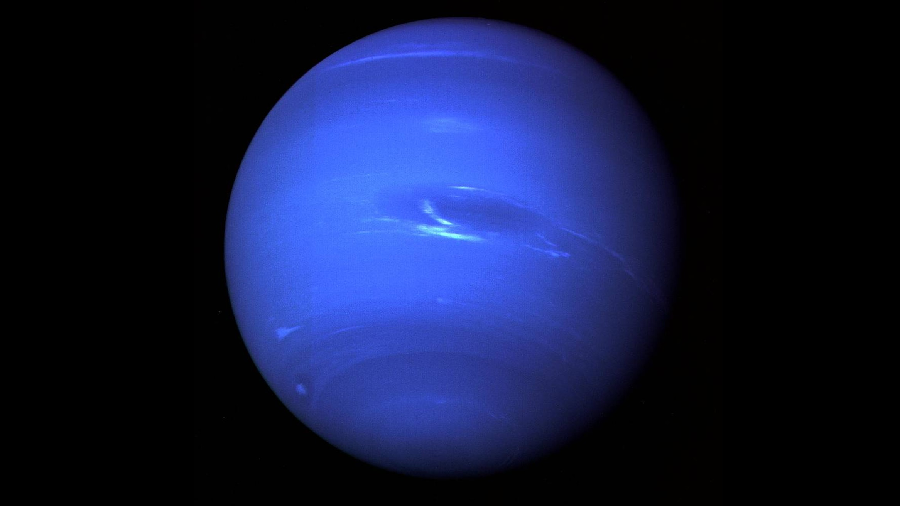
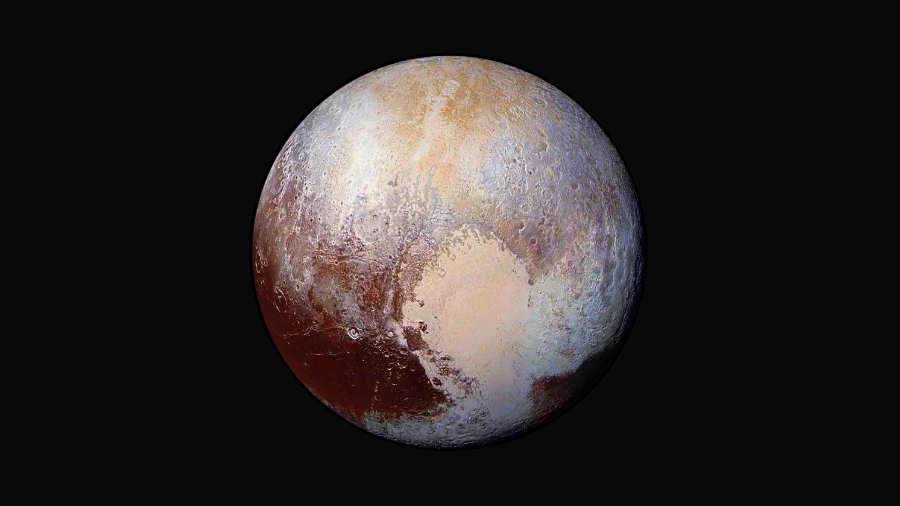

| Planet | Key Characteristic |
|---|---|
| Mercury | Smallest and closest to the Sun |
| Venus | Hottest and brightest planet |
| Earth | Only planet with confirmed life |
| Mars | The Red Planet |
| Jupiter | The largest planet |
| Saturn | Most extensive ring system |
| Uranus | Rotates on its side (Ice Giant) |
| Neptune | Farthest from the Sun |
